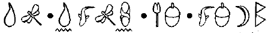
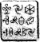

FOWL MALİKANESİ
KARŞILIKLI görüşme zamanı gelmişti. O gece, grup malikânenin konferans salonunda oturmuş, Juliet’in güvenlik odasından getirdiği iki ekrana bakıyordu. Foaly ekranların dalga boylarını ele geçirmiş, o ve Yarbay Root’un canlı görüntülerini yayınlıyordu.
Canı sıkılsa da Mulch hâlâ oradaydı. Holly dönüp onu bir iskemleye kelepçelemeden önce Artemis’ten bir tür ödül koparmaya çalışıyordu.
Root’un puro dumanı ekranı kaplamıştı. “Bakıyorum bütün çete orada,” dedi. “Ye bilin bakalım ne var? Ben çetelerden hoşlanmam.”
Holly kendi başlık telsizini konferans masasının ortasını yerleştirmişti, böylece odada bulunan herkes konuşmayı duyabiliyordu.
“Açıklayabilirim, Yarbay.”
“Ah, ben de şimdi bunu yapabileceğine iddiaya giriyordum. Ama tuhaftır ki açıklamanın ne olursa olsun bende bir etki yapmayacağı ve bu vardiya bitmeden rozetini alıp çekmeceme koyacağım gibi bir önsezim var.” Artemis araya girmeye çalıştı. “Gerçekten, Yarbay. Holly... Yüzbaşı Short... onu kandırdığım için burada.” “Durum bu mu? O zaman acaba niçin hâlâ orada? Akşam yemeği yiyorsunuz, değil mi?”
“Alay etme zamanı değil, Yarbay. Burada ciddi bir durum var. Felaket olasılığı olan.”
Root yeşilimsi bir duman bulutu çıkardı. “Siz insanların birbirinize yaptıklarınız sizi ilgilendirir. Biz senin özel polis gücün değiliz, Fowl.”
Foaly boğazını temizledi. “İstesek de istemesek de bu işe karıştık: bizi pingleyen Artemis'ti. Ye işin en kötüsü de bu değil.”
Root sentora karşıdan ters bir bakış attı. Foaly ona ilk adıyla seslenmişti. İşler ciddi olmalıydı.
“Peki, Yüzbaşı,” dedi. “Brifingine devam et.”
Holly el bilgisayarından bir rapor açtı.
“Dün Nöbetçi uyarı sisteminden gelen bir kayıta karşılık verdim. Aramayı LEP’in B’wa Kell isyanında aldığı yerle iyi tanıdığımız Çamur Adam Artemis Fowl yapmıştı. Fowl’un adamı Kâhya başka bir Çamur Adam olan Jon Spiro’nun emriyle ölümcül bir şekilde yaralanmıştı ve iyileştirme için benim yardımımı istedi.”
“Tabii ki sen bunu reddettin ve her zaman olduğu gibi hafıza silme için teknik destek istedin.”
Holly ekranın ısındığına yemin edebilirdi.
“Hayır. Kâhya’nın goblin devrimi sırasında yaptığı hatırı sayılır yardımı hesaba katarak iyileştirmeyi yaptım ve Kâhya’yla Fowl’u ikametgahlarına götürdüm.”
“Onları uçurdum deme bana...?”
“Başka bir seçenek yoktu. Bir folyoya sarılıydılar.” Root şakaklarını ovdu. “Bir ayak. Bir ayak bile dışarı taşsa yarın bütün internette olabiliriz. Holly, niçin bana bunları yapıyorsun?”
Holly cevap vermedi. Ne diyebilirdi ki?
“Dahası da var. Spiro’nun adamlarından birini ele geçirdik. Bu berbat bir işti.”
“Seni gördü mü?”
“Hayır. Ama Mulch’un bir peri cüce olduğunu söylediğini duydu.”
“Sorun değil,” dedi Foaly. “Blok hafıza silişi yap ve evine geri yolla.”
“O kadar da basit değil. Bu adam bir kiralık katil. İşi bitirmesi için tekrar yollanabilir. Sanırım onu başka bir yere yollamamız gerekiyor. Orada onu özleyen olmayacak.”
“Tamam,” dedi Foaly. “Ona sakinleştirici ver, silmeyi yap ve hafızasını harekete geçirecek her şeyden kurtul. Sonra zarar veremeyeceği bir yere yolla.”
Kumandan sakinleşmek için purosundan birkaç uzun nefes çekti.
“Tamam. Şimdi bana sondadan bahset. Eğer bundan Fowl sorumlu ise alarm bitti mi?”
“Hayır. İnsan iş adamı Jon Spiro peri teknolojisini Artemis’ten çaldı.”
“Artemis’in bizden çalmış olduğu,” diye belirtti Foaly.
“Bu Spiro denen kişi teknolojinin sırrını ele geçirmeye kararlı ve nasıl ele geçireceğinin onun için bir önemi yok,” diye devam etti Holly.
“Ve sırrı kim biliyor?” diye sordu Root.
“Artemis C Küpü çalıştırabilecek tek kişi.”
“C Küpün ne olduğunu bilmem gerekiyor mu?”
Sazı Foaly eline aldı. “Artemis LEP teknolojisinden bir bilgisayar yapmış. Çoğu modası geçmiş yüzey teknolojisi ama insan standartlarına göre, onların geliştirme cetveline göre yaklaşık elli yıl ileride.” ,
“Ve bundan dolayı bir servet değerinde,” diye sözü bitirdi kumandan.
“Ve bundan dolayı sınırsız bir servet değerinde,” diye ona katıldı Foaly.
Birden Mulch dinlemeye başladı. “Bir servet mi? Bir servet acaba ne kadar eder?”
Root bağıracak birini bulduğu için rahatladı. “Ağzını kapat, suçlu! Bu seni ilgilendirmiyor. Sen özgür havadan alacağın son birkaç nefesin keyfini çıkar. Yarın bu saatlerde hücre arkadaşınla tokalaşıyor olacaksın ve umarım o bir trolldür.”
Mulch buna teslim olmadı. “Beni rahat bırak, Julius. Ne zaman bir Fowl olayı olsa senin o zavallı kıçını hep ben kurtarıyorum. Artemis’in kafasından atacağı plan her neyse şeninkini de tamamen içereceğinden hiç şüphem yok. Büyük ihtimalle saçma bir tehlike kapasitesi de olacak.” Root’un rengi gül pembeden bütün vücudunu saran kırmızıya dönüştü. “Peki, Artemis? Suçluyu kullanmayı düşünüyor musun?”
“Duruma bağlı.”
“Ne durumuna?”
“Bana Holly’yi verip vermeyeceğine.”
Root’un kafası puro dumanından bir sisin ardında kayboldu. Parıldayan kırmızı ucuyla tünelden çıkan buharlı bir trene benziyordu. Dumanın bir kısmı Foaly’nin ekranına doğru yayıldı.
“İyi görünmüyor,” diye yorum yaptı sentor.
En sonunda Root konuşabilecek kadar sakinleşti. “Sana Holly’yi vermek mi? Tanrılar bana sabır verin. Bu görüşme için görmezlikten geldiğim prosedürün limiti hakkında hiçbir fikrin var mı?”
“Sanırım, oldukça çok.”
“Bir dağ gibi büyük, Artemis. Bir dağ. B’wa Kell olayı olmasaydı seninle hiç konuşmazdım bile. Eğer bu dışarı sızarsa, kendimi Atlantis’te lağım boşaltma denizaltıların başında bulabilirim.”
Mulch ekrana göz kırptı. “Büyük ihtimalle bunu duymamış olmalıyım.”
Yarbay onu önemsemedi. “Otuz saniyen var, Artemis. Beni ikna et.”
Artemis ayağa kalkıp ekranın tam önünde durdu. “Peri teknolojisi Spiro’nun elinde. Kullanabilmesi olası değil ama bilim adamlarını iyon teknolojisine yönlendirecek. Bu adam, hayata ve çevreye saygısı olmayan bir megaloman. Peri teknolojisinden ne tür bir berbat makine yapacağını kim bilebilir? Bu yeni teknolojinin Haven’ı bulmasına yardımcı olma şansı var ve eğer bu olursa gezegenin üstündeki ve altındaki bütün yaratıkların hayatı riske girecek.”
Root iskemlesini kameradan uzaklaştırıp Foaly’nin ekranında belirdi. Sentorun kulağına doğru eğilip yavaşça fısıldayarak konuştu.
“İyi görünmüyor,” dedi Holly. “Bir sonraki mekikle eve dönebilirim.”
Artemis’in parmakları masanın üzerinde trampet çalıyordu. Perilerin desteği olmadan Spiro’nun işini halletmenin nasıl olacağını tahmin etmek zordu.
Bir süre sonra, kumandan kendi ekranında tekrar belirdi.
“Bu ciddi bir iş. Bu Spiro denen adamın bir sonda daha yapma riskini göze alamayız. Ne kadar düşük, bir olasılık olsa da hâlâ bir şans var. Tam teçhizat bir Düzeltme timi toplamam gerekiyor.”
“Eksiksiz bir tim mi?” diye itiraz etti Holly. “Bir şehirde mi? Yarbay, Düzetme’nin ne olduğunu biliyorsunuz. Bu bir felakete dönüşebilir. Bırakın da şuna bir göz atayım.”
Root bunu düşündü. “Bir operasyona hazırlanmak için kırk sekiz saat gerekir, bu yüzden elinde bu kadar süre var. Seni birkaç gün kollayabilirim. Foaly’yi almana da izin veremem. Bu operasyonu toparlamak için oldukça çok işi olacaktır. Ama Diggums eğer isterse yardım edebilir; bu onun kendi tercihidir. Birkaç soygun suçlamasını kaldırabilirim ama hâlâ beşten on milyona kadar soygunla yüzleşmek zorunda. Benim yapabileceğim bu kadar. Eğer başarısız olursanız Düzeltme timi saldırıya hazır bekleyecek.”
Artemis bunu düşündü. “Çok iyi.”
Root nefes aldı. “Bu şart var.”
“Ben de öyle olduğunu düşündüm,” dedi Artemis. “Hafıza silme istiyorsun. Değil mi?”
“Evet, Artemis. Peri Halkı için ciddi bir engel oluşturuyorsun. Bu konuda sana eşlik edersek, sen ve ekibinin hafıza silmeyi kabul etmeniz gerekiyor.”
“Ya etmezsek?”
“O zaman biz doğru B planına geçeceğiz ve yine hafızan silinecek.”
“Yanlış anlamayın, Yarbay ama bu teknik bir konu...”
Foaly devreye girdi. “İki tür hafıza silme vardır. Seçilen dönemdeki her şeyi silen, blok silme. Holly bunu çantasındaki malzemeyle yapabilir. İnce ayar silme ise sadece belli anıları siler. Bu çok daha uzmanlık isteyen bir prosedürdür ama IQnun düşme tehlikesi daha azdır. Hepinize ince ayar silme yapabiliriz. Bilgisayar sisteminizde peri bağlantılı dosyaları otomatikman silen bir data saldırısı yaparım. Aynı zamanda, etrafta peri hatırlatmaları yapacak bir şey olabileceği ihtimaline karşı evini temizlemek için iznine ihtiyacım var. Basit anlamda, bu operasyondan sonraki gün uyandığınızda Peri Halkıyla ilgili kayıtlı hiçbir anınız kesinlikle olmayacak.”
“Sen yaklaşık iki yıllık anılardan bahsediyorsun.” “Onları özlemeyeceksin. Beynin boşlukları doldurmak için yenilerini icat edecek.”
Bu zor bir karardı. Bir taraftan, Peri Halkı hakkındaki bilgisi Artemis’in psikolojik maskesinin büyük bir bölümüydü. Diğer taraftan, kimsenin hayatını artık riske atamazdı.
“Anlaştık,” dedi genç adam. “Teklifini kabul ediyorum.”
Root purosunu yakındaki yakıcıya attı. “Tamam, o zaman. Bir anlaşmamız var. Yüzbaşı Short, kanalı hep açık tut.”
“Emredersiniz, efendim.”
“Holly.”
“Evet, Yarbay?”
“Bu işte dikkatli ol. Kariyerin bir fiyaskoya daha dayanamaz.
“Anladım, efendim,” dedi Holly.
“Ah ve suçlu?”
Mulch iç çekti. “Sanırım, benden bahsediyorsun, Julius?”
Root kaşlarını çattı. “Bitti, Mulch. Tekrar kaçamazsın, bu yüzden beynini soğuk yemek ve sert duvarlara hazırla.”
Mulch sırtını ekrana dönerek ayağa kalktı. Özel yapım tünel kazma pantolonunun popo kapağı bir şekilde açılıp kumandana arkasının sevimli görüntüsünü sundu. Cüce dünyasında, bütün kültürlerde olduğu gibi popo göstermek en büyük hakaretti.
Yarbay Root bağlantıyı kesti. Ne de olsa böyle bir hakarete verecek cevap yoktu.
WAJIR'İN BATISI, KEHYA, DOĞU AFRİKA.
Loafers McGuire onu güçten düşüren bir baş ağrısıyla uyandı. Ya daha sonra tanımlama zorunda kalırsa diye kendini bir söz sanatı bulmak zorunda hissedecek kadar çok acı vericiydi bu. Kafasının, kafatasının içinde kızgın bir kirpinin sürünüyormuş gibi olduğuna karar verdi. Çok kötü değil, diye düşündü. Bunu kitaba eklemeliyim.
Sonra düşündü, ne kitabı? Sonraki düşüncesi kimim bendi? Ayakkabılar, ayakkabılarla bağlantılı bir şeydi.
Hafızası nakli yapılanlar her zaman ilk kendilerin geldiklerinde böyleydiler. Eski kimlikleri birkaç saniye daha varlığını sürdürür, dış uyarıcı silinip gidene kadar kendini içeri sokmaya çalışırdı.
Loafers ayağa kalktı ve kirpi delirip yumuşak beyin dokusunun her santimetre karesine iğnelerini sapladı.
“Ah,” diye inledi Loafers, ağrıyan kafatasını beşik gibi sallayarak. Bütün bunlar ne demek oluyordu? Neredeydi? Buraya nasıl gelmişti?
Loafers kollarına baktı. Bir an için beyni gözüne dövmeler yansıttı ama görüntüler çabucak kayboldular. Derisi güzeldi. Güneş ışığı ön kolunda bir yıldırım gibi dolaştı.
Bütün etrafı seyrek, bodur bitkilerle doluydu. Kızıl balçık toprak uzaktaki çivit mavisi tepelere doğru uzanıyordu. Altın bir çember şeklindeki güneş,1-parıldayan toprağın içinde çatlaklar açmıştı. Çitalar gibi zarif iki kişi sıcak dalgalarının arasında koşuyorlardı.
Adamlar devdi, en az iki on boyunda. Her birinde oval deri bir kalkan, ince bir mızrak ve bir cep telefonu vardı. Saçları, boyunları ve kulakları renkli boncuklarla süslenmişti.
Loafers ayağa fırladı. Ayaklarında deri sandaletler olduğunu fark etti. Bu adamlar Nike giyiyorlardı.
“İmdat,” diye bağırdı. "Yardım edin!”
Adamlar yönlerini değiştirdiler, şaşkın gangstere doğru koştular.
“Jambo, kardeşim. Kayıp mı oldun?” diye sordu biri.
“Özür dilerim,” dedi Loafers, mükemmel bir Swahiliceyle. “Swahilice konuşmasını bilmiyorum.”
Adam arkadaşına baktı.
“Anladım. İsmin ne?”
“Loafers,” dedi Loafers’ın beyni. “Nuru,” dedi ağzı.
“Peki, Nuru. Unatoka wapi? Nerelisin?”
Loafers daha bu konuda bir şey yapamadan kelimeler ağzından döküldü.
“Nereli olduğumu bilmiyorum ama sizinle gelmek istiyorum. Olmam gereken yer orası.”
Kenyalı savaşçılar küçük yabancıya dik dik baktılar. Renginin yanlış olduğu doğruydu ama yeteri kadar aklı başındaymış gibi görünüyordu.
İkilinin uzun boylu olanı leopar derisi kemerinden cep telefonunu aldı. Kabile şefinin numarasını çevirdi.
“Jambo, Şef, ben Bobby. Toprak ruhları bir tane daha bıraktılar.”
Bobby gülerken Loafers’a baştan aşağıya bakıp duruyordu.
“Evet, ufak tefek ama güçlüymüş gibi görünüyor ve soyulmuş muzdan daha büyük bir gülümsemesi var.”
Loafers gülümsemesini genişletti, işe yarayacak faktör ya buysa diye. Her nedense, bütün dünyadaki istediği tek şey o köye gitmek ve üretken bir yaşam sürmekti.
“Tamam, Şef, onu getiriyorum. Misyonerin eski kulübesini alabilir.”
Bobby cep telefonunun tekrar kemerine taktı.
“Tamam, Nuru kardeş. Aramıza katıldın. £izi takip et ve yetişmeye çalış.”
Savaşçılar canlı bir tempoyla koşmaya başladılar. Bundan böyle Nuru olarak bilinecek olan Loafers arkalarından koştu, sandaletleri ayağında çırpıyordu. Kesinlikle spor ayakkabılar bulması lazımdı.
Başlarının kırk beş metre üzerinde Yüzbaşı Holly Short uçuyordu, kalkanlanmış bir şekilde bütün olayı rapor ediyordu.
“Yeni yere yerleşme tamamlandı,” dedi miğfer mikrofonuna. “Mevzu bahis olan kişi başarılı bir şekilde kabul edildi. Asıl kişiliğinden görünen bir belirti yok. Ne olur, ne olmaz diye ayda bir denetlenecek.”
Foaly hattında diğer uçundaydı.
“Mükemmel, Yüzbaşı. Hemen E77 mekik limanına dön. Eğer gazı açarsan, akşam mekiğini bile yakalayabilirsin. Birkaç saat sonra seni tekrar İrlanda’da buluruz.” Holly’ye ikinci kez söylenmesine gerek yoktu. Sık sık hız izni çıkmazdı. Ne olur ne olmaz akbabalarla uğraşmamak için radarını açtı ve siperliğindeki saati kurdu.
“Şimdi,” dedi. “Bakalım havada sürat rekorunu kırabilecek miyim?”
Bu, Julius Root’un seksen yıl önce kırdığı bir rekordu.